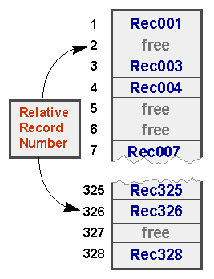

Introduction
The aim of this unit is to provide a gentle introduction to COBOL's direct access file organizations and to equip you with a knowledge of the advantages and disadvantages of each type of organization.
By the end of this unit you should:
- Have a good understanding of the drawbacks of inserting, deleting and amending records in an ordered Sequential file.
- Have a basic knowledge of how Relative and Indexed files are organized.
- Understand the advantages and disadvantages of the different file organizations.
- Be able to choose the appropriate file organization for a particular set of circumstances .
You should be familiar with the material covered in the unit;
- Sequential Files
Sequential files
Access to records in a Sequential file is serial. To reach a particular record, all the preceding records must be read.
As we observed when the topic was introduced earlier in the course, the organization of
an
unordered Sequential file means it is only practical to read records
from the file and add records to the end of the file (
OPEN..EXTEND). It is not practical to delete or
update records.
While it is possible to delete, update and insert records in an ordered Sequential file, these operations have some drawbacks.
Records in an ordered Sequential file are arranged, in order, on some key field or fields. When we want to insert,delete or amend a record we must preserve the ordering. The only way to do this is to create a new file. In the case of an insertion or update, the new file will contain the inserted or updated record. In the case of a deletion, the deleted record will be missing from the new file.
The main drawback to inserting, deleting or amending records in an ordered Sequential file is that the entire file must be read and then the records written to a new file. Since disk access is one of the slowest things we can do in computing this is very wasteful of computer time when only a few records are involved.
For instance, if 10 records are to be inserted into a 10,000 record file, then 10,000 records will have to be read from the old file and 10,010 written to the new file. The average time to insert a new record will thus be very great.
While Sequential files have a number of advantages over other types of file organization (and these are discussed fully in the final section) the fact that a new file must be created when we delete, update or insert a records causes problems.
These problems are addressed by direct access files. Direct access files allow us to read, update, delete and insert individual records, in situ, using a key.
To insert a record in an ordered Sequential file:
- All the records with a key value less than the record to be inserted must be read and then written to the new file.
- Then the record to be inserted must be written to the new file.
- Finally, the remaining records must be written to the new file.
To delete a record in an ordered Sequential file:
- All the records with a key value less than the record to be deleted must be written to the new file.
- When the record to be deleted is encountered it is not written to the new file.
- Finally, all the remaining records must be written to the new file.
To amend a record in an ordered Sequential file:
- All the records with a key value less than the record to be amended must be read and then written to the new file.
- Then the record to be amended must be read the amendments applied to it and the amended record must then be written to the new file.
- Finally, all the remaining records must be written to the new file.
The Sequential file animation below shows the operations of inserting, deleting and amending a record in an ordered Sequential file.
The problem with Sequential files is that unless the file is ordered very few (only read and add) operations can be applied to it.
Even when a Sequential file is ordered; delete, insert and amend operations are prohibitively expensive (in processing terms) when only a few records in the file are affected (i.e. when the "hit rate" is low) .
Relative Files
As we have already noted, the problem with Sequential files is that access to the records is serial. To reach a particular record, all the proceeding records must be read.
Direct access files allow direct access to a particular record in the file using a key and this greatly facilitates the operations of reading, deleting, updating and inserting records.
COBOL supports two kinds of direct access file organizations -Relative and Indexed.
Records in relative files are organized on ascending Relative Record Number. A Relative file may be visualized as a one dimension table stored on disk, where the Relative Record Number is the index into the table. Relative files support sequential access by allowing the active records to be read one after another.
Relative files support only one key. The key must be numeric and must take a value between 1 and the current highest Relative Record Number. Enough room is allocated to the file to contain records with Relative Record Numbers between 1 and the highest record number.
For instance, if the highest relative record number used is 10,000 then room for 10,000 records is allocated to the file.
Figure 1 below contains a schematic representation of a Relative file. In this example, enough room has been allocated on disk for 328 records. But although there is room for 328 records in the current allocation, not all the record locations contain records. The record areas labeled "free", have not yet had record values written to them.

Figure 1
To access a records in a Relative file a Relative Record Number must be provided. Supplying this number allows the record to be accessed directly because the system can use
the start position of the file on disk,
the size of the record,
and the Relative Record Number
to calculate the position of the record.
Because the file management system only has to make a few calculations to find the record position the Relative file organization is the fastest of the two direct access file organizations available in COBOL. It is also the most storage efficient.
To read, insert, delete or update a record directly, the Relative Record Number of the record must be placed in the key area and then the operation must be applied to the file.
Click on the diagram opposite to see these operations in action.
A Relative file is organized like a one dimension table on disk where each record is an element of the table. The Relative Record Number acts like a table index to allow access to the records.
Indexed Files
While the usefulness of a Relative file is constrained by its restrictive key, Indexed files suffer from no such limitation.
Indexed files may have up to 255 keys, the keys can be alphanumeric and only the primary key must be unique.
In addition, it is possible to read an Indexed file sequentially on any of its keys.
An Indexed file may have multiple keys. The key upon which the data records are ordered is called the primary key. The other keys are called alternate keys.
Records in the Indexed file are sequenced on ascending primary key. Over the actual data records, the file system builds an index. When direct access is required, the file system uses this index to find, read, insert, update or delete, the required record.
For each of the alternate keys specified in an Indexed file, an alternate index is built. However, the lowest level of an alternate index does not contain actual data records. Instead, this level made up of base records which contain only the alternate key value and a pointer to where the actual record is. These base records are organized in ascending alternate key order.
As well as allowing direct access to records on the primary key or any of the 254 alternate keys, indexed files may also be processed sequentially. When processed sequentially, the records may be read in ascending order on the primary key or on any of the alternate keys.
Since the data records are in held in ascending primary key sequence it is easy to see how the file may be accessed sequentially on the primary key. It is not quite so obvious how sequential on the alternate keys is achieved. This is covered in the unit on Indexed files.
In the animation below you can see a representation of an Indexed file and its overlying primary key index. Note that the index records point to the actual data records which are held in ascending primary key sequence.
This animation shows how a direct read on the primary key is done. The record to be read has a key value of "Ni". In the animation we see how the index is used to find the required record we.
The algorithm used for traversing the index is -
IF RecordKeyValue > RequiredKeyValue
take this branch
ELSE
go to next index record
END-IFAn Indexed file may have multiple, alphanumeric, keys.
Only the primary key must be unique.
For each key specified for an Indexed file, an index will be built.
Comparison of COBOL file organizations
In this section we examine the advantages and disadvantages of the three COBOL file organizations.
Disadvantages
|
Slow
|
The "hit rate" refers to the number of records in the file that are affected when updating a file. For instance, if only 100 records are to affected by an insert, delete or amend operation in a file of 10,000 records then the hit rate is low. But if 9,000 records are affected then the hit rate is high. Sequential files are very slow to update when the hit rate is low because the entire file must be read and then written to a new file, just to update a few records. |
|
Complicated
|
Sequential files are also complicated to change. Changes to Sequential files are batched together into a transaction file to minimize the low hit rate problem but this makes updating the Sequential file much more complicated than updating a direct access file. The complications come from having to match the records in the transaction file with those in the master file (i.e. the file to be updated). |
Advantages
|
Fast
|
When the hit rate is high this is the fastest method of updating a file because the record position does not have to be calculated and no indexes have to be traversed. |
|
Most storage efficient
|
This is the most storage efficient of all the file organizations. No indexes are required. Space from deleted records is recovered. Only room actually required to hold the records is allocated to the file. |
|
Simple organization
|
This is the simplest file organization. Records are held serially. |
|
Files may be stored on serial media
|
Sequential files may be stored on serial media such as magnetica tape. These media are cheap, removable and voluminous. |
Disadvantages
|
Wastes storage if the file is only partially populated
|
If the file is only partially populated with records then this is a very wasteful file organization. The file will be allocated enough room to hold records from 1 to the highest Relative Record Number used, even if only a few records have actually been written to the file. For instance, if the first record written to the file has a Relative Record Number of 10,000 then room for that many records is allocated to the file. The fact that there is only one key and that it must be numeric and must take a value between 1 and the highest record number is limiting. |
|
Cannot recover space from deleted records
|
Relative files cannot recover the space from deleted records. When a record is deleted in a Relative file, it is simply marked as deleted but the actual space that used to be occupied by the record is still allocated to the file (see record position 327 in Figure-1). So if a Relative file is 560K in size when full, it will still be 560K when you have deleted half the records. |
|
Only a single key allowed
|
The usefulness of Relative files is severely constrained by the fact that;
The single key is limiting because it is often the case that we need to access the file on more than one key. For instance, in a file of student records we might want to access the records on Student Id, Student Name, CourseCode or ModuleCode. |
|
The key must be numeric
|
The mention of using StudentName, CourseCode or ModuleCode as a key, highlights another drawback with Relative files. We frequently need to access the file using a key that is not numeric. |
|
The key is inflexible
|
The fact that the key must be in the range 1 to the highest key value and that the file system allocates space for all the records between 1 and the highest Relative Record Number used, imposes severe constraints on the key. For instance even though the StudentId is numeric we couldn't use it as a key because the file system would allocate space for records from 1 to the highest StudentId written to the file. Suppose the highest StudentId written to the file was 9876543. The file system would allocate space for 9,876,543 records. Sometimes we can get around the limitations of the key by using a transformation function to map the actual key on to the range of Relative Record Numbers. There are a number of possible transformation, or "hashing", functions, including truncation (only using some of the digits in the key as the Relative Record Number), folding (breaking the key into two or more parts and summing the parts), digit manipulation (manipulating some of the digits in the key to produce a Relative Record Number) and modulus division (using the remainder of a division operation as the Relative Record Number). Some transformation functions might even allow keys that are not numeric. Some transformation functions require special code to deal with duplication that occurs when the transformation of two different keys produces the same Relative Record Number. |
| Must be stored on direct access media | Because Relative files are direct access files they must be stored on direct access media such as a hard or floppy disks. They can not be stored on magnetic tape. |
Advantages
|
Fastest direct access organization
|
This is the fastest direct access organization. To reach a particular record, only a few simple calculations have to be done. |
|
Very little storage overhead
|
Unlike Indexed files, which must store the indexes as well as the data, Relative files have only a small storage overhead. |
|
Can be read sequentially
|
As well as allowing direct access, Relative files allow sequential access to the records in the file. |
Disadvantages
|
Slowest direct access organization
|
Because Indexed file achieve direct access by traversing a number of levels of index this is the slowest direct access organization. Indexed files must have a primary key index and an index for each alternate key. Each level of index implies an I/O operation on the hard disk. For instance, in the Indexed file animation three I/O operations were required to read the record (two for the index records and one for data record). Because of this, Indexed files are substantially slower than Relative files. They are especially slow when writing or deleting records because the primary key index and the alternate key indexes may need to be rebuilt. |
|
Not very storage efficient
|
Indexed files require more storage than other file organizations because file must store;
In addition, the space from deleted records is only partially recovered. |
|
Must be stored on direct access media
|
Because Indexed files are direct access files they must be stored on direct access media such as a hard or floppy disks. They cannot be stored on magnetic tape. |
Advantages
|
Versatile keys
|
Indexed files can have multiple alphanumeric keys and only the primary key has to be unique. An indexed file may be read sequentially on any of its keys. When we compare the number of disadvantages of Indexed files with the advantages we might be forgiven for thinking "Why would we ever use Indexed files?". But the versatility of its keys overrides all its disadvantages with the result that Indexed files are the most widely used direct access file organization. |
There is no one best file organization. Choosing an appropriate file organization is a case of "horses for courses".
If the hit rate is high and we have no need for direct access to the records, a Sequential file might be best.
If the hit rate is low or if we require direct access to the records but one numeric key is sufficient, a Relative file might be the best choice.
If we need direct access on a number of keys or if the key must be alphanumeric, then we must choose an Indexed file.